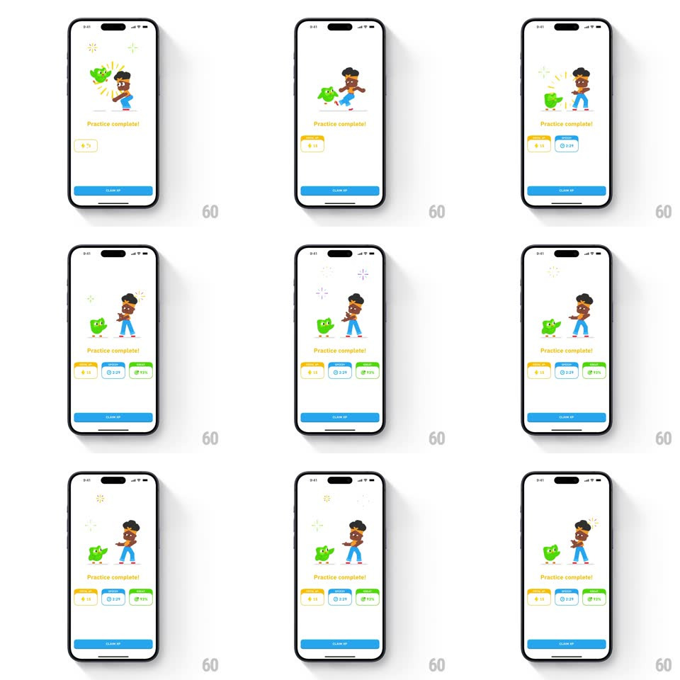

Media
Frame-by-frame

Rebuild this interaction 1:1: Duolingo's practice-complete dance - Duo and a character bust dance moves with popping confetti over "Practice complete!", while three stat cards (XP, time, accuracy) slide up in stagger below and a CLAIM XP button anchors the bottom.

Rebuild this interaction 1:1: Duolingo's practice-complete dance - Duo and a character bust dance moves with popping confetti over "Practice complete!", while three stat cards (XP, time, accuracy) slide up in stagger below and a CLAIM XP button anchors the bottom. ## Integration Integration: stack-agnostic spec - springs given as stiffness/damping, timed motions as duration + curve; map every value to your framework and animation library of choice. ## Scene White completion screen: Duo and a dancing character (headphones, mid-move poses), "Practice complete!" headline, three stat cards (yellow XP, blue time, green accuracy), blue CLAIM XP button. ## Motion spec Pattern: mascot dance with staggered card build. - The mascots spring in from below (spring ~320/18, 450ms) as confetti pops around them (small bursts, ~6 pieces each, 400ms). - The characters cycle through dance poses (pose swap every ~400ms, 3-4 poses) with a constant bounce (translateY +/-5px, 400ms loop). - Stat cards slide up one by one (translateY 24px + fade, spring ~340/22, 130ms stagger), values counting up on landing. - CLAIM XP fades in last (250ms); confetti re-pops occasionally (every ~2s). ## Calibration - The dance is pose-cycled, not skeletal - a handful of frames swapped rhythmically. - Cards arrive after the mascots settle, never during the entrance spring. ## Reduced motion Static celebration pose fades in (250ms); cards fade staggered; no confetti. ## Don't miss - The two characters dance in sync but not identically - offset poses read as a pair dancing together. - Confetti pops are small and local to the mascots.